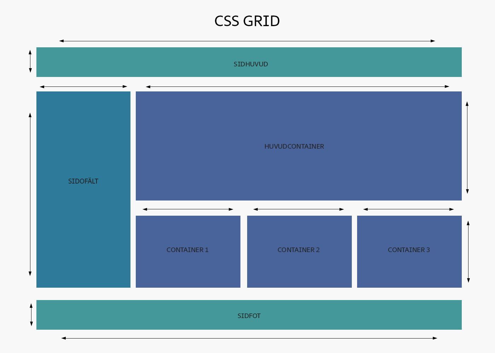

Ska jag använda Flexbox eller CSS Grid?
Flexbox och CSS Grid är två moderna metoder för att bygga layouter med CSS. De kompletterar varandra, men passar bra för olika typer av problem.
Läs mer härFlexbox och CSS Grid är två moderna metoder för att bygga layouter med CSS. De kompletterar varandra, men passar bra för olika typer av problem.
Läs mer härFlexbox används för endimensionella layouts: antingen rader eller kolumner. Perfekt för navigationsmenyer, kort, knappar och innehållsblock. Mindre optimal för tvådimensionella layouter.

CSS Grid passar för tvådimensionella layouter med både rader och kolumner. Utmärkt för sidstrukturer, dashboard-liknande design och större sektioner. Kan vara mer komplext, men ger mycket kontroll.

Bästa resultat får du genom att kombinera båda! Använd Grid till sidlayout och Flexbox till innehållet inuti sektionerna.